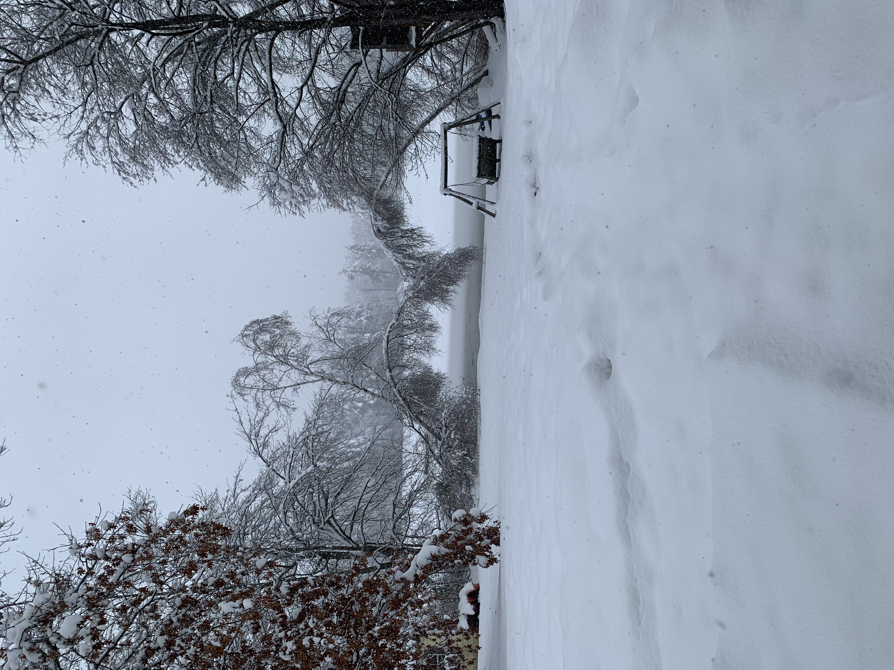
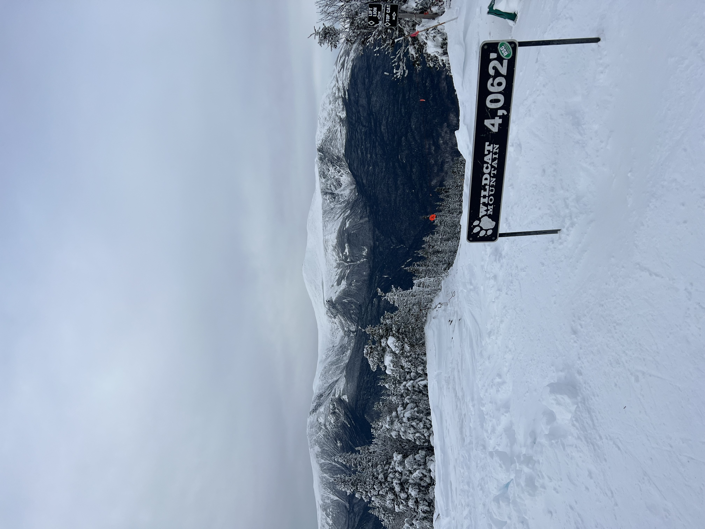

Winter in New England
 Skiing
Description: New England offers some of the best skiing on the east coast with many traveling from across the US. Skiing is a great winter activity as it provides something fun to do while also getting a workout in. There are small mountains for beginners as well as larger, more difficult mountains for experts. There are some mountains for everybody. Skiing is also a great activity as it allows you to explore the local towns surrounding it.
Location: Skiing in New England is best in the north with states like Maine, Vermont, and New Hampshire. Some notable ski resorts are:
Killington Vermont,
Sugarloaf Maine, and
Loon New Hampshire
Cost: According to OnTheSnow ski lift tickets usually cost around $80 but can cost more or less. However, it is important to note that there are external costs for renting equipment. Overall, skiing can be an expensive activity.

Ice Skating
Description: New England offers many different places to ice skate. Since it can get very cold, many people enjoy skiing on local ponds or lakes. However, you can also skate on manmade ice rinks in cities across New England. Ice Skating can be easy to learn and fun for the whole family.
Location: You can ice skate in about every state but here are some notable spots:
Lake Winnipesaukee New Hampshire,
Boston Ice Skating Rink Massachusetts, and
Providence Rink Rhode Island
Cost: According to wbur.org ice skating can cost up to $25 making it a relatively cheap activity for the winter in New England
Snowmobiling
Description: Snowmobiling is an extremely fun activity if you want to move fast. When there is a lot of snow on the ground it can be very fun to snowmobile on trails across New England. Snowmobiling can be dangerous so it is important to follow all safety instructions.
Location: Snowmobiling is best where there is lots of snow, so the best spots are usually in Northern New England. Here are some notable spots:
White Mountains New Hampshire,
Green Mountains Vermont, and
Coburn Mountain Maine
Cost: According to northeastsnowmobile.com it can cost around $150-$180 to rent a snowmobile in New England